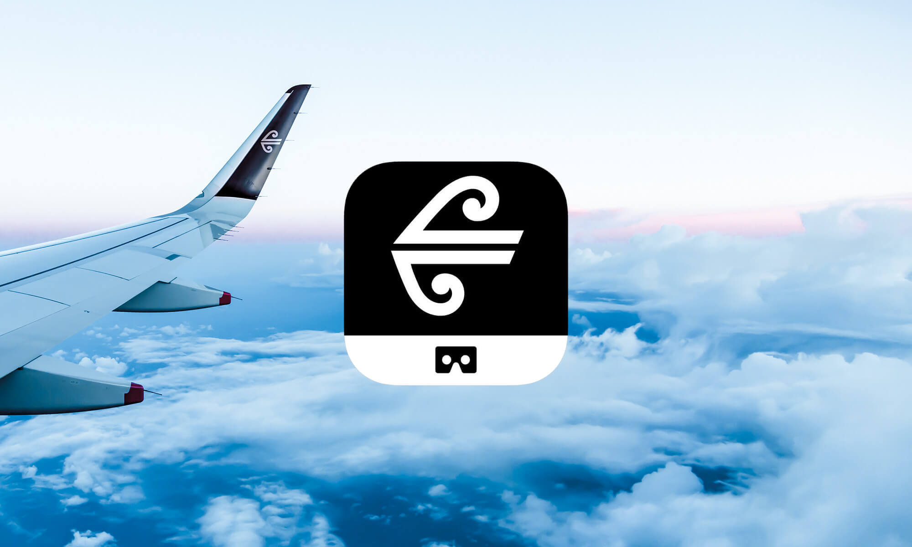
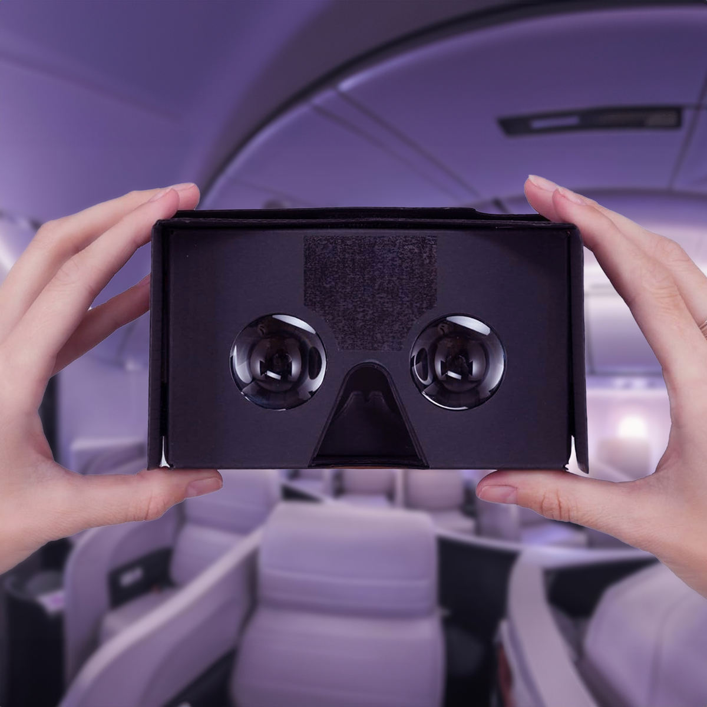
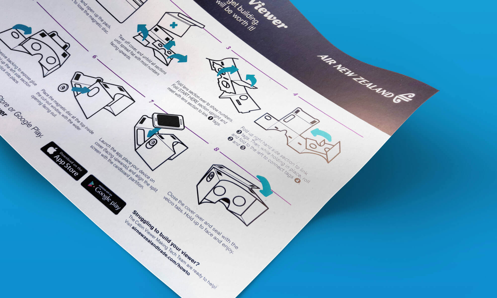
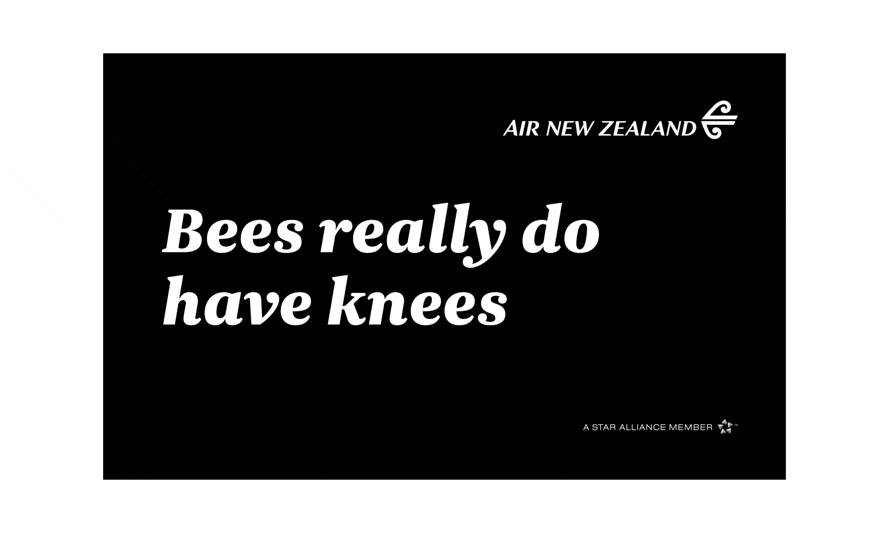
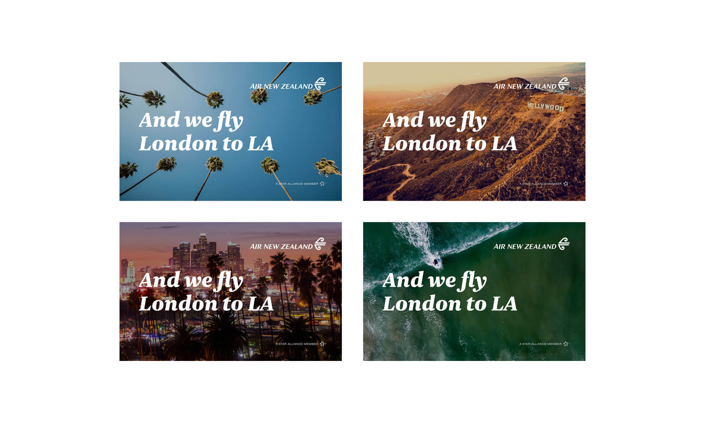
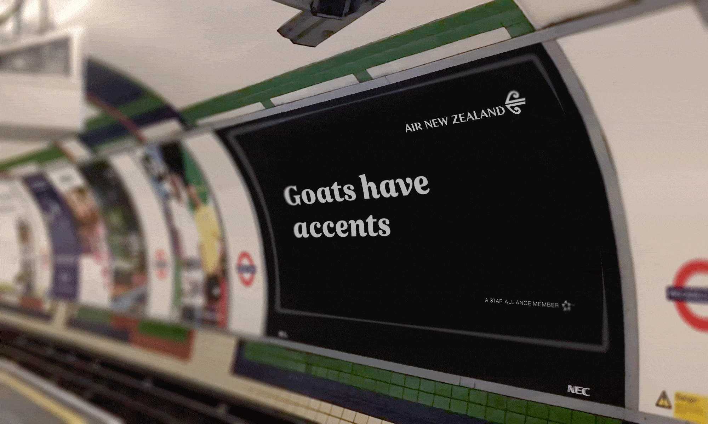
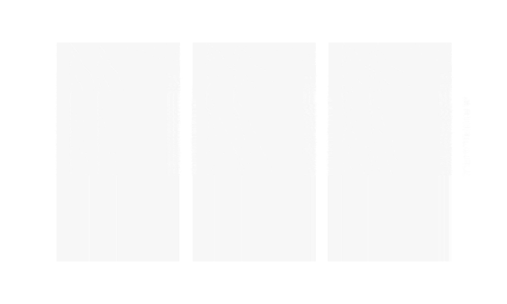

Air New Zealand
Cabin Viewer
VR app / UI / illustration
Work created at Front Page
My first project with Air New Zealand explored how emerging technology could help people better understand what they were buying before committing to a long-haul flight. We worked on a Google Cardboard app and custom viewer that allowed customers to virtually step inside the aircraft and look around different cabin classes.

The idea was simple but powerful. Using a smartphone mounted inside a low-cost cardboard headset, users could experience a 360° view of the cabin interiors. The app split the screen for each eye and used the phone’s gyroscope to respond to head movement, creating a surprisingly immersive sense of space. It wasn’t VR for novelty’s sake — it was a practical tool to remove uncertainty, letting customers understand layout, comfort, and atmosphere before booking.


The accessibility of Google Cardboard was a key part of the thinking. Rather than positioning VR as something futuristic and exclusive, this approach made it lightweight, approachable, and easy to distribute — an early example of using emerging technology in a way that genuinely supported decision-making.

The second project moved away from product experience and into brand-led communication. The Bet You Didn’t Know campaign was built around a simple insight: many travellers didn’t realise Air New Zealand flies direct from London to Los Angeles. Instead of leading with the route, the campaign leaned into curiosity and surprise.

Running predominantly across London Underground stations, the creative used unexpected facts to grab attention — “babies can’t dream”, “lobsters taste with their feet”, “mangoes get sunburn”, “bees do have knees” — before revealing the airline’s daily direct service. The tone was light-hearted and slightly irreverent, designed to feel human rather than corporate.
As Air New Zealand’s Head of UK and Europe, Joanna Copestake, put it at the time: “People are sometimes surprised when we tell them Air New Zealand flies direct from London to Los Angeles. We wanted to draw on that element of surprise with our latest campaign, using it to raise awareness among travellers of our award-winning product, kiwi hospitality and the fact that we fly directly from London to Los Angeles with no hidden extras, making our airline a better way to fly.”



Together, the two projects reflected the same underlying approach: use creativity and technology not to shout louder, but to make the product clearer, more tangible, and more memorable. Whether through immersive VR or a poster glimpsed on a platform, the goal was always the same — help people understand what makes Air New Zealand different, and remember it when it mattered.